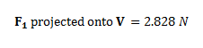

Dot Product
The dot product is a mathematical operation that can be performed on any two vectors that have the same number of elements. The mathematical operation is represented by a "·" between the two vectors (hence the name dot product). The dot product of two vectors is a scalar no matter how many elements the vectors have. In statics, the dot product is often used to find the projection of one vector onto another vector.
To find the projection of one vector onto another, you first calculate the dot product of the two vectors and then you divide the dot product by the magnitude vector you are projecting onto. A more detailed procedure is provided below.
- First calculate the dot product of the two vectors. This is done with the formula below. The corresponding elements from the two vectors are multiplied and then all of these values are summed up. The value you get from this calculation is the dot product.
- To find the magnitude of the first vector projected onto the second, simply divide the dot product by the magnitude of the second vector. To find the magnitude of the second vector projected onto the first, simply divide the dot product by the magnitude of the first vector.
Dot products are particularly useful for changing coordinate systems. If a vector is defined in one coordinate system and you need to define it in terms of another coordinate system, you simply calculate the dot product of vector with a unit vector in each of the new coordinate axes. This will give you the components of the vector in terms of your new coordinate system.
Worked Problems
Worked Problem 1:
| Work | Comments |
|
The first step is to calculate the dot product. To do this you multiply all the corresponding elements of the vectors and add all these values together. |
|
|  |
We would next divide by the magnitude of V to find the length of the projection, but since the length of the any unit vector is one, this is not necessary. This means that the projection calculations are complete. |
 |
| Author: Jacob Moore has liscenced this work under a Creative Commons Attribution-NonCommercial 3.0 Unported License. |